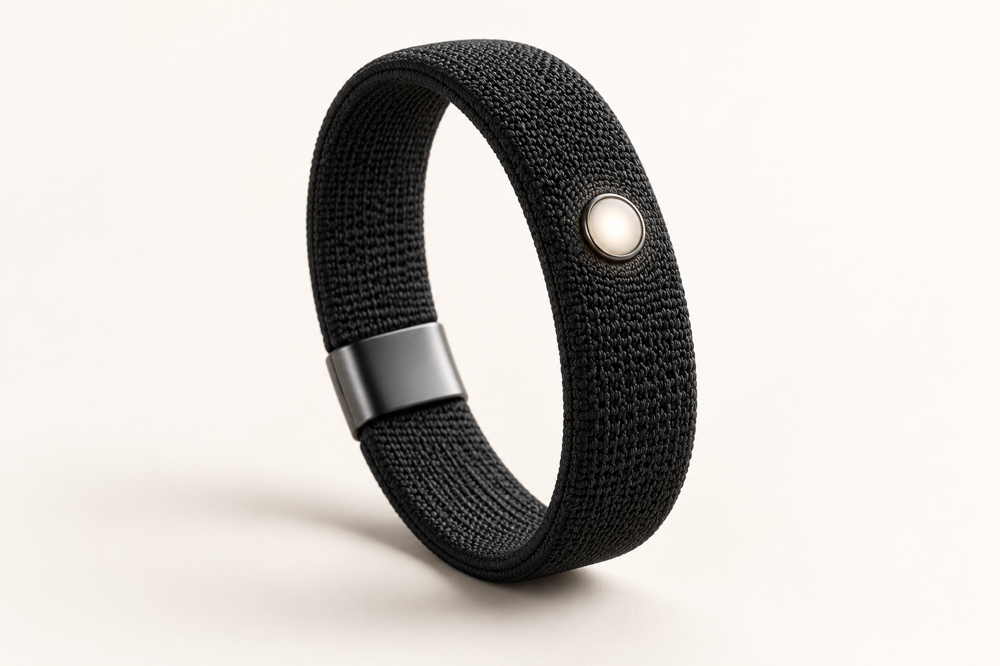

01 / STAY ON TRACK
YOUR DAY ✦
Make time for what matters.09:30Focus time
11:00Project catch-up
16:00Take a breath
Thoughtful timing.
A clearer view of what is ahead, right when you need it.
Meet the wearable companion designed to help you move through your day with clarity, calm, and a little more room to be you.
Join waitlist
Product concept shown. Final design and features may change.
Imagine an assistant that feels close at hand, without asking you to live inside another screen.
A clearer view of what is ahead, right when you need it.
Capture the thought now. Get back to the moment.
Technology that supports your day, instead of taking it over.
Talk to Zenn the way you naturally think. Start with a question, an idea, or the thing you almost forgot.
Get early updatesSimple enough to wear every day. Considered enough to feel like yours.
A soft, low-profile concept made to fit into daily life.
A subtle presence for the moments you choose.
An expression of your style, with less to think about.
Zenn is built around useful context and clear controls. You decide what to connect, and what Zenn is allowed to do.
Choose the apps and information you want Zenn to work with.
Set boundaries for what Zenn can do and when it needs to ask.
See and correct what Zenn understands about you.
We believe a great assistant should help you stay capable, connected, and present. Zenn Band is one step toward that future.
We're shaping what's next. Join the waitlist for product updates and early access news.
No purchase or payment required. We'll only email you about Zenn Band.A concept for having Zenn close at hand.
Start with a thought, not a menu.
Let Zenn help across the apps you choose to connect.
Useful help with fewer distractions.
Zenn Band is in development. Technical specifications, availability, and final capabilities have not been announced.
Zenn's connected apps can help bring your work, plans, and conversations into one useful flow.
Available integrations depend on your connected accounts and permissions.
Not yet. Join the waitlist and we'll share updates as the product develops.
You'll receive product news and early access information by email. Joining does not reserve or purchase a device.
Zenn Band is being designed as a companion to the Zenn experience. We'll share final requirements before launch.
Pricing has not been announced. We'll share verified details with waitlist members when they're ready.
Zenn's connected app and permission controls are designed to keep you in charge of what it can access and do. Band-specific details will be published before launch.